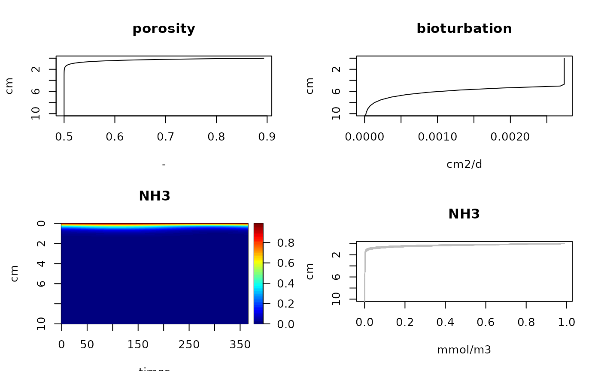

Functions to retrieve parameters, porosity, depth and sediment grid, irrigation and bioturbation, for the FESDIA and PHDIA models
FESDIAparms.RdPHDIAparms, FESDIAparms retrieve the parameters PHDIA and FESDIA model solutions.
FESDIAdepth, FESDIAdx retrieve the sediment depths and layer thicknesses of PHDIA or FESDIA model solutions.
FESDIAbiot, FESDIApor, FESDIAirr retrieve the bioturbation, porosity, and irrigation profiles of PHDIA and FESDIA model solutions.
Usage
FESDIAparms(out = NULL, as.vector = FALSE, which = NULL)
PHDIAparms(out = NULL, as.vector = FALSE, which = NULL)
FESDIAdepth(out = NULL)
FESDIAgrid(out = NULL)
FESDIAbiot(out)
FESDIApor(out)
FESDIAirr(out)Arguments
- out
an output object returned by FESDIAsolve or FESDIAdyna. If
NULL,FESDOIAparmswill return the default (parameter) values.- as.vector
if
TRUEwill return the parameter vector, else a data.frame that also contains the units.- which
if not
NULL, a vector with names of the parameters to return.
Value
FESDIA0D and FESDIA1D return the output variables of the solution as a vector or data.frame.
For dynamic runs, the output is averaged over the mean of the run.
FESDIA1D always returns the sediment depth and the porosity as the first two columns.
Details
The parameters and their meaning are the following (with default values):
Cflux = 20*1e5/12/365 , nmolC/cm2/d - Carbon deposition
rFast = 25/365 , /d , decay rate fast decay detritus
rSlow = 0.5/365 , /d , decay rate slow decay detritus
pFast = 0.9 , - , fraction fast detritus in flux
NCrFdet = 0.16 , molN/molC , NC ratio fast decay detritus
NCrSdet = 0.13 , molN/molC , NC ratio slow decay detritus
PCrFdet = 9.75e-03 , molP/molC , PC ratio fast decay det.
PCrSdet = 9.75e-03 , molP/molC , PC ratio slow decay det.
FeOH3flux = 1 , nmol/cm2/d , FeOH3 deposition rate
CaPflux = 0 , nmolP/cm2/d , deposition rate of CaP
O2bw = 300 , mmol/m3 Oxygen conc in bottom water
NO3bw = 10 , mmol/m3 Nitrate
NH3bw = 1 , mmol/m3 Ammonium
CH4bw = 0 , mmol/m3 Methane
PO4bw = 0.5 , mmol/m3 Phoshpate
DICbw = 2200 , mmol/m3 dissolved inorganic carbon
Febw = 0 , mmol/m3 dissolved iron
H2Sbw = 0 , mmol/m3 sulphide
SO4bw = 30000 , mmol/m3 sulphate
w = 0.1/365000, cm/D , advection rate
mixL = 5 , cm , the depth of bioturbation layer
biot = 1 , cm2/yr , the bioturbation rate
irr = 0 , /d , the irrigation rate
gasflux = 0 , cm/d , piston velocity for dry flats - exchange of O2 and DIC only+deposition
MPBprod = 0 , mmol/m3/d , maximal rate of picrophytobenthos production - range: 5000-5e4
kMPB = 4 , /cm , exponential decay
ksDIN = 0.01 , mmol/m3 , N limitation constant
ksPO4 = 0.001 , mmol/m3 , P limitation constant
ksDIC = 1 , mmol/m3 , C limitation constant
NH3Ads = 1.3 , - , Adsorption coeff ammonium
rnit = 20. , /d , Max nitrification rate
ksO2nitri = 1. , umolO2/m3 , half-sat O2 in nitrification
ksO2oxic = 3. , mmolO2/m3 , half-sat O2 in oxic mineralisation
ksNO3denit= 30. , mmolNO3/m3 , half-sat NO3 in denitrification
kinO2denit= 1. , mmolO2/m3 , half-sat O2 inhib denitrification
kinNO3anox= 1. , mmolNO3/m3 , half-sat NO3 inhib anoxic degr
kinO2anox = 1. , mmolO2/m3 , half-sat O2 inhib anoxic min
temperature = 10 , dgC - for estimation of diffusion coefficients
salinity = 35 ,
TOC0 = 0.5 , the background C concentration,
rFePadsorp = 1e-5 , /d, FeP adsorption rate
rCaPprod = 0 , /d, CaP production rate
rCaPdiss = 0 , /d, CaP dissolution rate
CPrCaP = 0.2869565 , Ca:P ratio (mol/mol) - Ca10(PO4)4.6(CO3)1.32F1.87(OH)1.45
ksFeOH3 = 12500. , mmolFeOH3/m3 half-sat FeOH3 in iron red
kinFeOH3 = 12500. , mmolFeOH3/m3 half-sat FeOH3 inhib BSR
ksSO4BSR = 1600. , mmolSO4/m3 half-sat SO4 in sulfate reduction
kinSO4Met = 1000 , mmolSO4/m3, half-sat SO4 inhibition for methanogenesis
rFeox = 0.3 , /d/nmol/cm3 oxidation constant for iron by O2 (bimolecular rate law)
rH2Sox = 5e-4 , /d/nmol/cm3 oxidation constant for diss Sulfide by O2 (bimolecular rate law)
rFeS = 1e-3 , /d/nmol/cm3 oxidation constant for diss Sulfide by O2 (bimolecular rate law)
rCH4ox = 27 , /d/nmol/cm3 oxidation constant for CH4 by O2 (bimolecular rate law)
rAOM = 3e-5 , /d/nmol/cm3 oxidation constant for AOM CH4 by SO4 (bimolecular rate law)
por0 = 0.9 , - surface porosity
pordeep = 0.5 , - deep porosity
porcoeff = 0.3 , cm porosity coefficient
gridtype = 1 , 1 = cartesian, 2 = cylindrical, 3 = spherical
References
Soetaert K, PMJ Herman and JJ Middelburg, 1996a. A model of early diagenetic processes from the shelf to abyssal depths. Geochimica Cosmochimica Acta, 60(6):1019-1040.
Soetaert K, PMJ Herman and JJ Middelburg, 1996b. Dynamic response of deep-sea sediments to seasonal variation: a model. Limnol. Oceanogr. 41(8): 1651-1668.
Examples
# default parameters
defparms <- FESDIAparms(as.vector = TRUE)
defparms
#> Cflux pFast FeOH3flux CaPflux rFast
#> 4.566210e+02 9.000000e-01 1.000000e+00 0.000000e+00 6.849315e-02
#> rSlow NCrFdet NCrSdet PCrFdet PCrSdet
#> 1.369863e-04 1.509434e-01 1.509434e-01 9.433962e-03 9.433962e-03
#> BCupLiq BCdownLiq O2bw NO3bw NO2bw
#> 2.000000e+00 3.000000e+00 3.000000e+02 1.000000e+01 0.000000e+00
#> NH3bw CH4bw PO4bw DICbw Febw
#> 1.000000e+00 0.000000e+00 5.000000e-01 2.100000e+03 0.000000e+00
#> H2Sbw SO4bw ALKbw Mnbw O2dw
#> 0.000000e+00 3.100000e+04 2.400000e+03 0.000000e+00 NA
#> NO3dw NO2dw NH3dw CH4dw PO4dw
#> NA NA NA NA NA
#> DICdw Fedw H2Sdw SO4dw ALKdw
#> NA NA NA NA NA
#> Mndw w biot biotdepth biotatt
#> NA 2.739726e-06 2.739726e-03 5.000000e+00 1.000000e+00
#> irr irrdepth irratt gasflux NH3Ads
#> 0.000000e+00 5.000000e+00 1.000000e+00 0.000000e+00 1.300000e+00
#> rnitri1 rnitri2 ranammox ksO2nitri ksO2oxic
#> 2.000000e+01 2.000000e+01 1.000000e-01 1.000000e+00 3.000000e+00
#> ksNO3denit kinO2denit kinNO3anox kinO2anox temperature
#> 3.000000e+01 1.000000e+00 1.000000e+00 1.000000e-03 1.000000e+01
#> salinity TOC0 rFePadsorp rCaPprod rCaPdiss
#> 3.500000e+01 5.000000e-01 1.000000e-06 0.000000e+00 0.000000e+00
#> CPrCaP rPads rPdes maxPads ksFeOH3
#> 2.869565e-01 0.000000e+00 0.000000e+00 1.000000e+03 1.250000e+04
#> kinFeOH3 ksSO4BSR kinSO4Met rFeox rH2Sox
#> 1.250000e+04 1.600000e+03 1.000000e+03 3.000000e-01 5.000000e-04
#> rFeS rCH4ox rAOM rSurfH2Sox rSurfCH4ox
#> 1.000000e-03 2.700000e+01 3.000000e-05 0.000000e+00 0.000000e+00
#> ksSurfALK ksO2reox ODUoxdepth ODUoxatt por0
#> 3.000000e+03 1.000000e+00 5.000000e+00 1.000000e+00 9.000000e-01
#> pordeep porcoeff formationtype dilution Hwater
#> 5.000000e-01 3.000000e-01 1.000000e+00 0.000000e+00 1.000000e+01
#> Cfall FePfall FeOH3fall CaPfall addalk
#> 1.000000e+02 1.000000e+02 1.000000e+02 1.000000e+02 1.000000e+00
#> MPBprod kMPB kDINupt kPO4upt kDICupt
#> 0.000000e+00 4.000000e+00 1.000000e-02 1.000000e-03 1.000000e+00
#> rH2Sfeox MnO2flux rAgeFeox rMnOxid rH2SMnox
#> 1.200000e-04 1.000000e+00 1.555200e-03 8.640000e-04 1.728000e-04
#> rAgeMnox rMnFe rMnS rMnCO3prec rFeCO3prec
#> 4.665600e-03 6.480000e-06 1.000000e-05 3.000000e-04 3.000000e-04
#> ksMnO2 pFastFeOx pFastMnOx kinMnO2 isDICcorr
#> 2.600000e+03 5.000000e-01 5.000000e-01 2.600000e+03 0.000000e+00
# Some runs to work with
defsteady <- FESDIAsolve()
defdyn <- FESDIAdyna()
# altered steady-state run
out <- FESDIAdyna(parms = list(Cflux = 10), CfluxForc = list(amp = 1))
cbind(default = defparms, out = FESDIAparms(out))
#> default out.parms out.units
#> Cflux 4.566210e+02 1.000000e+01 nmolC/cm2/d
#> pFast 9.000000e-01 9.000000e-01 -
#> FeOH3flux 1.000000e+00 1.000000e+00 nmol/cm2/d
#> CaPflux 0.000000e+00 0.000000e+00 nmol/cm2/d
#> rFast 6.849315e-02 6.849315e-02 /d
#> rSlow 1.369863e-04 1.369863e-04 /d
#> NCrFdet 1.509434e-01 1.509434e-01 molN/molC
#> NCrSdet 1.509434e-01 1.509434e-01 molN/molC
#> PCrFdet 9.433962e-03 9.433962e-03 molP/molC
#> PCrSdet 9.433962e-03 9.433962e-03 molP/molC
#> BCupLiq 2.000000e+00 2.000000e+00 -
#> BCdownLiq 3.000000e+00 3.000000e+00 -
#> O2bw 3.000000e+02 3.000000e+02 mmol/m3
#> NO3bw 1.000000e+01 1.000000e+01 mmol/m3
#> NO2bw 0.000000e+00 0.000000e+00 mmol/m3
#> NH3bw 1.000000e+00 1.000000e+00 mmol/m3
#> CH4bw 0.000000e+00 0.000000e+00 mmol/m3
#> PO4bw 5.000000e-01 5.000000e-01 mmol/m3
#> DICbw 2.100000e+03 2.100000e+03 mmol/m3
#> Febw 0.000000e+00 0.000000e+00 mmol/m3
#> H2Sbw 0.000000e+00 0.000000e+00 mmol/m3
#> SO4bw 3.100000e+04 3.100000e+04 mmol/m3
#> ALKbw 2.400000e+03 2.400000e+03 mmol/m3
#> Mnbw 0.000000e+00 0.000000e+00 mmol/m3
#> O2dw NA NA mmol/m3
#> NO3dw NA NA mmol/m3
#> NO2dw NA NA mmol/m3
#> NH3dw NA NA mmol/m3
#> CH4dw NA NA mmol/m3
#> PO4dw NA NA mmol/m3
#> DICdw NA NA mmol/m3
#> Fedw NA NA mmol/m3
#> H2Sdw NA NA mmol/m3
#> SO4dw NA NA mmol/m3
#> ALKdw NA NA mmol/m3
#> Mndw NA NA mmol/m3
#> w 2.739726e-06 2.739726e-06 cm/d
#> biot 2.739726e-03 2.739726e-03 cm2/d
#> biotdepth 5.000000e+00 5.000000e+00 cm
#> biotatt 1.000000e+00 1.000000e+00 /cm
#> irr 0.000000e+00 0.000000e+00 /d
#> irrdepth 5.000000e+00 5.000000e+00 cm
#> irratt 1.000000e+00 1.000000e+00 cm
#> gasflux 0.000000e+00 0.000000e+00 cm/d
#> NH3Ads 1.300000e+00 1.300000e+00 -
#> rnitri1 2.000000e+01 2.000000e+01 /d
#> rnitri2 2.000000e+01 2.000000e+01 /d
#> ranammox 1.000000e-01 1.000000e-01 /(mmol/m3)/d
#> ksO2nitri 1.000000e+00 1.000000e+00 mmolO2/m3
#> ksO2oxic 3.000000e+00 3.000000e+00 mmolO2/m3
#> ksNO3denit 3.000000e+01 3.000000e+01 mmolNO3/m3
#> kinO2denit 1.000000e+00 1.000000e+00 mmolO2/m3
#> kinNO3anox 1.000000e+00 1.000000e+00 mmolNO3/m3
#> kinO2anox 1.000000e-03 1.000000e-03 mmolO2/m3
#> temperature 1.000000e+01 1.000000e+01 dgC
#> salinity 3.500000e+01 3.500000e+01 psu
#> TOC0 5.000000e-01 5.000000e-01 %
#> rFePadsorp 1.000000e-06 1.000000e-06 /d
#> rCaPprod 0.000000e+00 0.000000e+00 /d
#> rCaPdiss 0.000000e+00 0.000000e+00 /d
#> CPrCaP 2.869565e-01 2.869565e-01 mol/mol
#> rPads 0.000000e+00 0.000000e+00 /d
#> rPdes 0.000000e+00 0.000000e+00 /d
#> maxPads 1.000000e+03 1.000000e+03 mmolP/m3solid
#> ksFeOH3 1.250000e+04 1.250000e+04 mmolFeOH3/m3
#> kinFeOH3 1.250000e+04 1.250000e+04 mmolFeOH3/m3
#> ksSO4BSR 1.600000e+03 1.600000e+03 mmolS/m3
#> kinSO4Met 1.000000e+03 1.000000e+03 mmolS/m3
#> rFeox 3.000000e-01 3.000000e-01 /(mmol/m3)/d
#> rH2Sox 5.000000e-04 5.000000e-04 /(mmol/m3)/d
#> rFeS 1.000000e-03 1.000000e-03 /(mmol/m3)/d
#> rCH4ox 2.700000e+01 2.700000e+01 /(mmol/m3)/d
#> rAOM 3.000000e-05 3.000000e-05 /(mmol/m3)/d
#> rSurfH2Sox 0.000000e+00 0.000000e+00 /d
#> rSurfCH4ox 0.000000e+00 0.000000e+00 /d
#> ksSurfALK 3.000000e+03 3.000000e+03 mmol/m3
#> ksO2reox 1.000000e+00 1.000000e+00 mmolO2/m3
#> ODUoxdepth 5.000000e+00 5.000000e+00 cm
#> ODUoxatt 1.000000e+00 1.000000e+00 /cm
#> por0 9.000000e-01 9.000000e-01 -
#> pordeep 5.000000e-01 5.000000e-01 -
#> porcoeff 3.000000e-01 3.000000e-01 cm
#> formationtype 1.000000e+00 1.000000e+00 -
#> dilution 0.000000e+00 0.000000e+00 /d
#> Hwater 1.000000e+01 1.000000e+01 cm
#> Cfall 1.000000e+02 1.000000e+02 cm/d
#> FePfall 1.000000e+02 1.000000e+02 cm/d
#> FeOH3fall 1.000000e+02 1.000000e+02 cm/d
#> CaPfall 1.000000e+02 1.000000e+02 cm/d
#> addalk 1.000000e+00 1.000000e+00 -
#> MPBprod 0.000000e+00 0.000000e+00 mmol/m3/d
#> kMPB 4.000000e+00 4.000000e+00 /cm
#> kDINupt 1.000000e-02 1.000000e-02 mmol/m3
#> kPO4upt 1.000000e-03 1.000000e-03 mmol/m3
#> kDICupt 1.000000e+00 1.000000e+00 mmol/m3
#> rH2Sfeox 1.200000e-04 1.200000e-04 cm3/nmol/d
#> MnO2flux 1.000000e+00 1.000000e+00 nmol/cm2/d
#> rAgeFeox 1.555200e-03 1.555200e-03 cm3/nmol/d
#> rMnOxid 8.640000e-04 8.640000e-04 cm3/nmol/d
#> rH2SMnox 1.728000e-04 1.728000e-04 cm3/nmol/d
#> rAgeMnox 4.665600e-03 4.665600e-03 cm3/nmol/d
#> rMnFe 6.480000e-06 6.480000e-06 cm3/nmol/d
#> rMnS 1.000000e-05 1.000000e-05 cm3/nmol/d
#> rMnCO3prec 3.000000e-04 3.000000e-04 cm3/nmol/d
#> rFeCO3prec 3.000000e-04 3.000000e-04 cm3/nmol/d
#> ksMnO2 2.600000e+03 2.600000e+03 mmol/m3
#> pFastFeOx 5.000000e-01 5.000000e-01 -
#> pFastMnOx 5.000000e-01 5.000000e-01 -
#> kinMnO2 2.600000e+03 2.600000e+03 mmol/m3
#> isDICcorr 0.000000e+00 0.000000e+00 -
#> out.description
#> Cflux total organic C deposition
#> pFast part FDET in carbon flux
#> FeOH3flux deposition rate of FeOH3
#> CaPflux deposition rate of CaP
#> rFast decay rate FDET
#> rSlow decay rate SDET
#> NCrFdet NC ratio FDET
#> NCrSdet NC ratio SDET
#> PCrFdet PC ratio FDET
#> PCrSdet PC ratio SDET
#> BCupLiq upper boundary liq. 1:flux, 2:conc, 3:0-grad
#> BCdownLiq lower boundary liq. 1:flux, 2:conc, 3:0-grad
#> O2bw upper boundary O2 -if BC=1: flux, 2:conc
#> NO3bw upper boundary NO3 -if BC=1: flux, 2:conc
#> NO2bw upper boundary NO2 -if BC=1: flux, 2:conc
#> NH3bw upper boundary NH3 -if BC=1: flux, 2:conc
#> CH4bw upper boundary CH4 -if BC=1: flux, 2:conc
#> PO4bw upper boundary PO4 -if BC=1: flux, 2:conc
#> DICbw upper boundary DIC -if BC=1: flux, 2:conc
#> Febw upper boundary Fe2+ -if BC=1: flux, 2:conc
#> H2Sbw upper boundary H2S -if BC=1: flux, 2:conc
#> SO4bw upper boundary SO4 -if BC=1: flux, 2:conc
#> ALKbw upper boundary alkalinity -if BC=1: flux, 2:conc
#> Mnbw upper boundary Manganese -if BC=1: flux, 2:conc
#> O2dw lower boundary O2 -if BC=1: flux, 2:conc
#> NO3dw lower boundary NO3 -if BC=1: flux, 2:conc
#> NO2dw lower boundary NO2 -if BC=1: flux, 2:conc
#> NH3dw lower boundary NH3 -if BC=1: flux, 2:conc
#> CH4dw lower boundary CH3 -if BC=1: flux, 2:conc
#> PO4dw lower boundary PO4 -if BC=1: flux, 2:conc
#> DICdw lower boundary DIC -if BC=1: flux, 2:conc
#> Fedw lower boundary Fe2+ -if BC=1: flux, 2:conc
#> H2Sdw lower boundary H2S -if BC=1: flux, 2:conc
#> SO4dw lower boundary SO4 -if BC=1: flux, 2:conc
#> ALKdw lower boundary alkalinity -if BC=1: flux, 2:conc
#> Mndw lower boundary Mangenese -if BC=1: flux, 2:conc
#> w advection rate
#> biot bioturbation coefficient
#> biotdepth depth of mixed layer
#> biotatt attenuation coeff below biotdepth
#> irr bio-irrigation rate
#> irrdepth depth of irrigated layer
#> irratt attenuation coeff below irrdepth
#> gasflux piston velocity for dry flats
#> NH3Ads Adsorption coeff ammonium
#> rnitri1 Max nitrification rate step1 (NH3ox)
#> rnitri2 Max nitrification rate step2 (NO2ox)
#> ranammox Anammox rate
#> ksO2nitri half-sat O2 in nitrification
#> ksO2oxic half-sat O2 in oxic mineralisation
#> ksNO3denit half-sat NO3 in denitrification
#> kinO2denit half-sat O2 inhib denitrification
#> kinNO3anox half-sat NO3 inhib anoxic degr
#> kinO2anox half-sat O2 inhib anoxic min
#> temperature temperature
#> salinity salinity
#> TOC0 refractory Carbon conc
#> rFePadsorp rate FeP adsorption
#> rCaPprod rate CaP production
#> rCaPdiss rate CaP dissolution
#> CPrCaP C:Pratio in CaP
#> rPads adsorption rate PO4
#> rPdes desorption rate of adsorbed P
#> maxPads Max adsorbed P concentration
#> ksFeOH3 half-sat FeOH3 conc in iron reduction
#> kinFeOH3 half-sat FeOH3 inhibition S reduction
#> ksSO4BSR half-sat SO4 conc in sulphate reduction
#> kinSO4Met half-sat SO4 inhibition methanogenesis
#> rFeox Max rate Fe oxidation
#> rH2Sox Max rate H2S oxidation
#> rFeS maximum rate FeS production
#> rCH4ox Max rate CH4 oxidation with O2
#> rAOM Max rate anaerobic oxidation Methane
#> rSurfH2Sox Max rate H2S oxidation with BW O2
#> rSurfCH4ox Max rate CH4 oxidation with BW O2
#> ksSurfALK half-sat Alkalinity in oxidation of H2S/CH4 with bwO2
#> ksO2reox half-sat Oxygen in oxidation of H2S/CH4 with bwO2
#> ODUoxdepth Max depth H2S/CH4 oxidation with BW O2
#> ODUoxatt depth attenuation ODU oxidation
#> por0 surface porosity
#> pordeep deep porosity
#> porcoeff porosity decay coefficient
#> formationtype formationfactor, 1=sand,2=fine sand,3=general
#> dilution relaxation towards background conc
#> Hwater height of water over core
#> Cfall fall speed of organic C (FDET, SDET)
#> FePfall fall speed of FeP
#> FeOH3fall fall speed of FeOH3
#> CaPfall fall speed of CaP
#> addalk solve for alkalinity
#> MPBprod maximal MPB production rate
#> kMPB sedimentary light extinction coefficient
#> kDINupt DIN limitation constant MPB
#> kPO4upt P limitation constant MPB
#> kDICupt C limitation constant MPB
#> rH2Sfeox Rate of Sulphide-mediated iron reduction (oxyhydr)oxides
#> MnO2flux Flux of Mn Oxides
#> rAgeFeox Ageing of FeOx=A
#> rMnOxid Rate of Reoxidation of Mn by Oxygen
#> rH2SMnox Rate of Reoxidation of H2S by MnOx
#> rAgeMnox Ageing of MnOx=A
#> rMnFe Rate of Reoxidation of Fe with MnOx
#> rMnS Rate of MnS formation
#> rMnCO3prec Rate of MnCO3 formation
#> rFeCO3prec Rate of FeCO3 formation
#> ksMnO2 Half saturation constant for Mn red
#> pFastFeOx fraction fast FeOH3 in flux
#> pFastMnOx fraction fast MnO2 in flux
#> kinMnO2 Inhibition of iron and other by MnO2
#> isDICcorr DIC correction for Calcite precip - Rassmann et al 2020
# grid used for outputs
pm <- par(mfrow = c(2, 2))
plot(FESDIApor(out), FESDIAdepth(out), ylim = c(10,0),
type = "l", ylab = "cm", xlab = "-", main = "porosity")
plot(FESDIAbiot(out), FESDIAdepth(out), ylim = c(10,0),
type = "l", ylab = "cm", xlab = "cm2/d", main = "bioturbation")
image(out, which = "NH3", grid = FESDIAdepth(out), ylim = c(10,0),
main = "NH3", mfrow = NULL, legend = TRUE, ylab = "cm")
#> Warning: 'x' is NULL so the result will be NULL
matplot.1D(out, which = "NH3", xyswap = TRUE, grid = FESDIAdepth(out),
type = "l", col = "grey", ylim = c(10,0), mfrow = NULL,
ylab = "cm", xlab = "mmol/m3")

par(mfrow = pm)